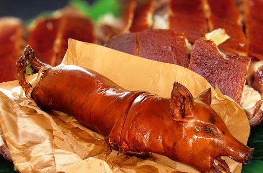

|
Bicol Express |
Bicol |
It features porked cooked in gata(coconut milk) with rich and spicy flavors. |
| 
|
Lechon Cebu |
Cebu |
It is a pig typically stuffed with lemon grass. The lechon is best enjoyed with crispy skin and Mang Tomas- a famous Philippine sauce. |

|
Ilocos Empanada |
Ilocos |
The eye-catching dish contains a crispy orang wrapper that encloses pork, vegetables, and eggs. This is most often paired with a good-tasting vinegar. |

|
Sisig |
Pampanga |
It is a dish that contains onions, dhopped pork, chillis, and egg. This dish encaptures the hearts of Filipinos all over the country. Some considering it the best Filipino dish. |

|
Chicken Inasal |
Bakolod |
It is barbequed chicken grilled to perfection. It is paired with rice that is drizzled in chicken oil and soy sauce. |